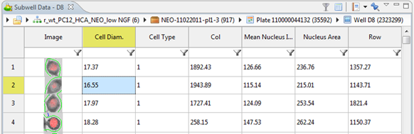
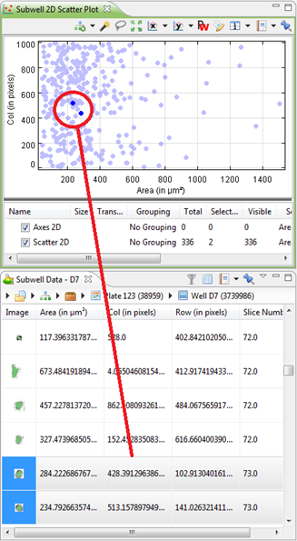
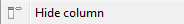
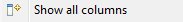
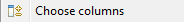
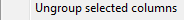
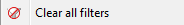
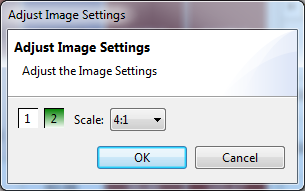

The subwell data view displays the subwell data for the currently selected well in a table. Selecting another well will refresh the table. If no data is available for a well, the table will be empty. Each subwell feature is represented by a column, which can be configured by right-clicking on the table and selecting Configure Columns...

An example of interaction with the Well Image is shown below:

The table interacts with other sub-well views: if, for example, you have a sub-well 2D scatter plot open, any selections you make in either view will be shown in the other view as well.

By right-clicking on the column headers, the following context-menu options are shown:
|  |
Hides the selected column |
|  |
Shows all available columns |
|  |
Lets you choose which columns are shown |
| Lets you group the currently columns | |
|  |
Ungroups the selected column |
| Auto resize the selected columns | |
| Rename the selected column | |
|  |
Clear all set filters |
 |
Change the formatting of the selected column |
Right-clicking on the Subwell data allows you to change the Image Settings

You can switch image layers on and off or you can adjust the scale at which the images are shown.
Subwell Data Menu
| Toggle between showing all items or selected items only. | |
| Attempts to reduce column width for a more compact presentation. | |
| Save the view or add the view to a report. | |
| Pin (freeze) the view so its contents won't change new cells are selected. |